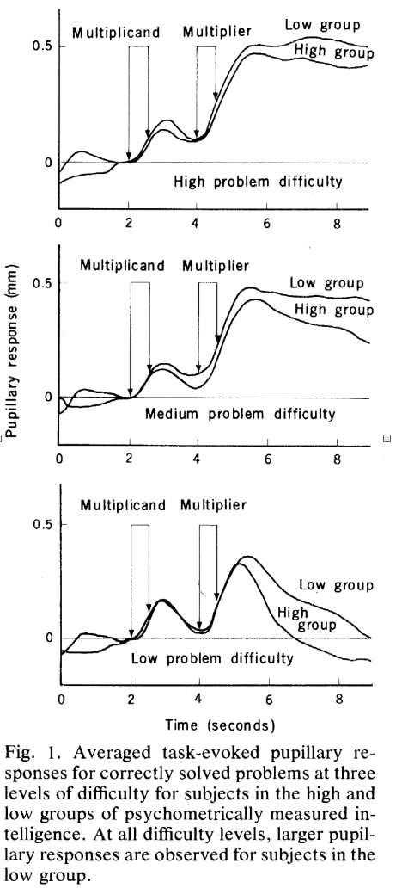
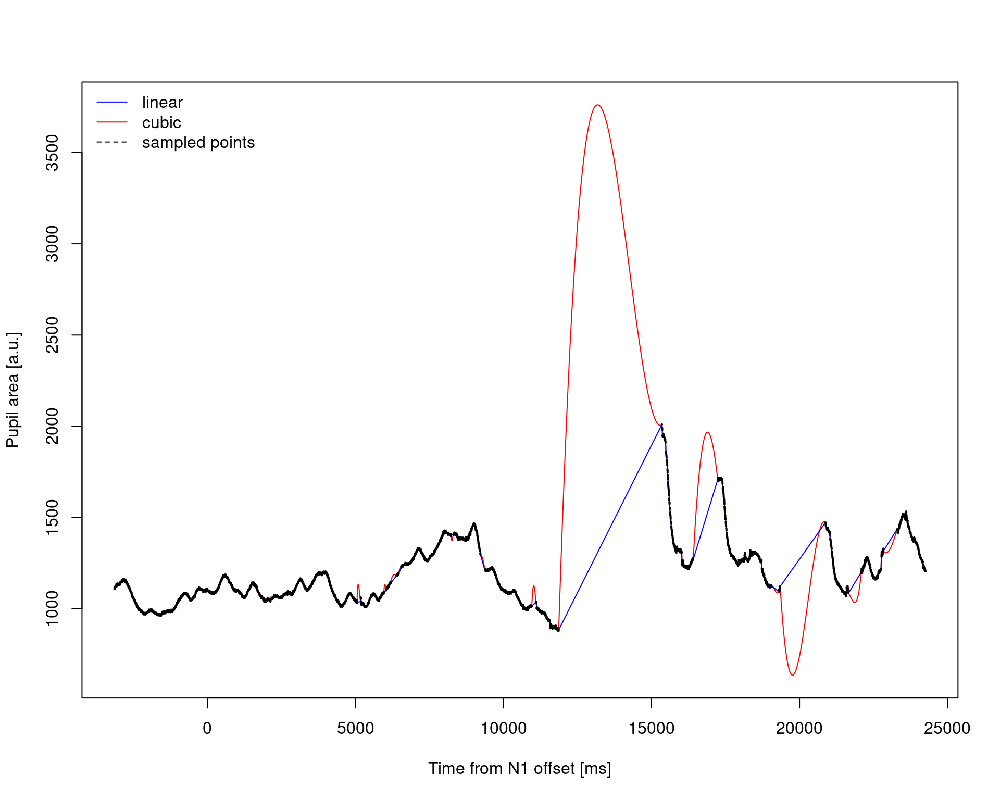
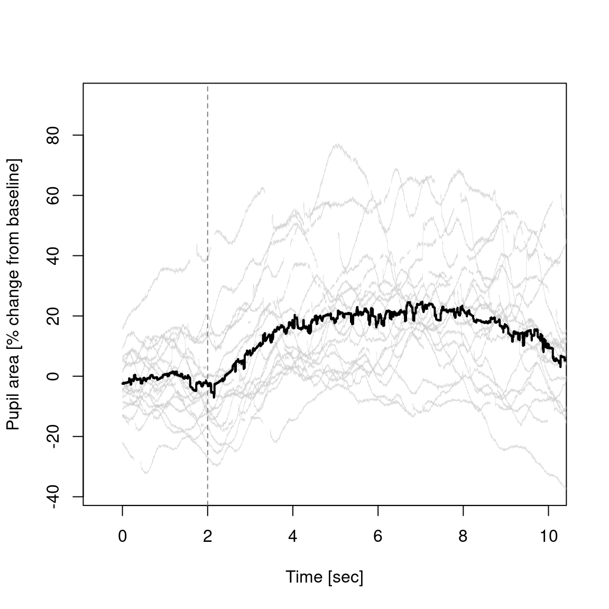
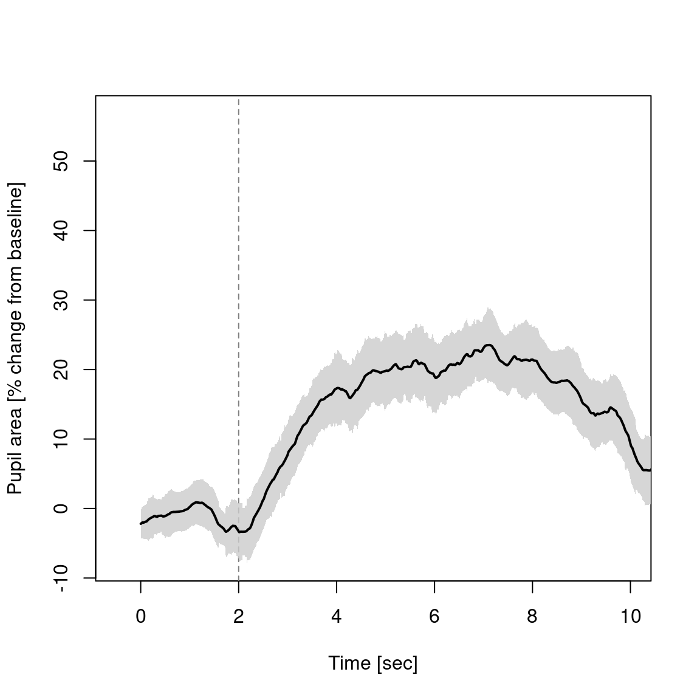
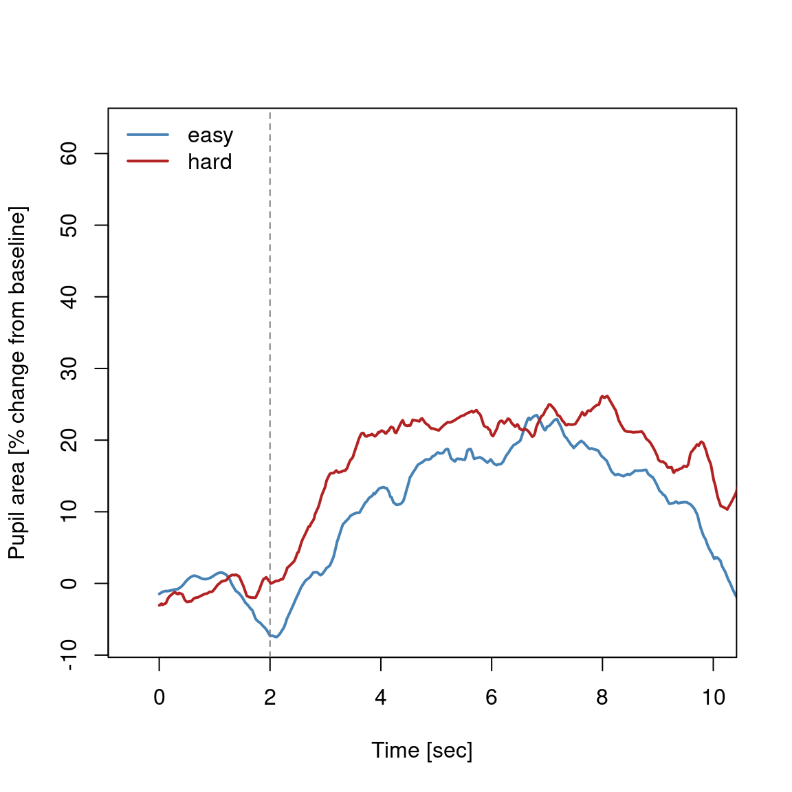

Code
rm(list = ls())
library(eyelinker)
source("eyelink_source.R")PS5210 25-26
This worksheet translates illustrates the analysis of pupil-size measures in the mental arithmetic task.
rm(list = ls())
library(eyelinker)
source("eyelink_source.R")This experiment aimed at measuring pupil responses to mental effort exerted while multiplying numbers (Hess and Polt 1964; Ahern and Beatty 1979). Essentially, two numbers are presented via headphones, and the participants is required to multiply them and give the answers while their pupil size is measured.


If you look at the code of the task (in the file pupil_math.m) you can see how the numbers were selected (around line 133):
%% task settings
multiplicand_easy = [6,9];
multiplier_easy = [12,14];
multiplicand_hard = [11,14];
multiplier_hard = [16,19];
For each condition, the two numbers defined the range of values that could be presented as number. Each trial then the problem randomly decided whether to run an easy or difficult trial, and sampled a single integer value (using the matlab function randi) for both multiplicand and multiplier. The code that do this is in the part of the code that loop over trial (around line 232 of pupil_math.m):
% random
is_hard = randn(1)>0;
if is_hard
N1 = randi(multiplicand_hard, 1);
N2 = randi(multiplier_hard, 1);
else
N1 = randi(multiplicand_easy, 1);
N2 = randi(multiplier_easy, 1);
endedf <- "./data/S2301.edf"
# Convert EDF to ASC (overwrite existing ASC if present)
system2("edf2asc", args = c("-y", edf))
asc <- sub("\\.[Ee][Dd][Ff]$", ".asc", edf)
dat <- read.asc(asc, parse_all = TRUE)
str(dat)List of 8
$ raw : spc_tbl_ [426,761 × 6] (S3: spec_tbl_df/tbl_df/tbl/data.frame)
..$ block : num [1:426761] 1 1 1 1 1 1 1 1 1 1 ...
..$ time : int [1:426761] 1094994 1094995 1094996 1094997 1094998 1094999 1095000 1095001 1095002 1095003 ...
..$ xp : num [1:426761] 728 728 728 728 728 728 728 728 728 729 ...
..$ yp : num [1:426761] 504 505 506 506 506 ...
..$ ps : num [1:426761] 1024 1023 1023 1023 1020 ...
..$ cr.info: chr [1:426761] "..." "..." "..." "..." ...
..- attr(*, "spec")=
.. .. cols(
.. .. time = col_integer(),
.. .. xp = col_double(),
.. .. yp = col_double(),
.. .. ps = col_double(),
.. .. cr.info = col_character()
.. .. )
..- attr(*, "problems")=<externalptr>
$ sacc : tibble [970 × 11] (S3: tbl_df/tbl/data.frame)
..$ block: num [1:970] 1 1 1 1 1 2 2 2 3 3 ...
..$ stime: num [1:970] 1095094 1095447 1095642 1096136 1097182 ...
..$ etime: num [1:970] 1095155 1095504 1095660 1096280 1097195 ...
..$ dur : num [1:970] 62 58 19 145 14 160 18 219 69 189 ...
..$ sxp : num [1:970] 729 281 779 805 806 ...
..$ syp : num [1:970] 507 592 566 615 606 ...
..$ exp : num [1:970] 292 772 812 813 805 ...
..$ eyp : num [1:970] 577 552 601 599 583 ...
..$ ampl : num [1:970] 10.89 12.1 1.24 0.47 0.59 ...
..$ pv : num [1:970] 369 506 108 757 52 802 81 617 548 586 ...
..$ eye : Factor w/ 2 levels "L","R": 2 2 2 2 2 2 2 2 2 2 ...
$ fix : tibble [987 × 8] (S3: tbl_df/tbl/data.frame)
..$ block: num [1:987] 1 1 1 1 1 1 2 2 2 2 ...
..$ stime: num [1:987] 1095000 1095156 1095505 1095661 1096281 ...
..$ etime: num [1:987] 1095093 1095446 1095641 1096135 1097181 ...
..$ dur : num [1:987] 94 291 137 475 901 75 616 182 282 791 ...
..$ axp : num [1:987] 729 279 780 809 809 ...
..$ ayp : num [1:987] 509 588 561 605 602 ...
..$ aps : num [1:987] 1019 998 985 1040 1046 ...
..$ eye : Factor w/ 2 levels "L","R": 2 2 2 2 2 2 2 2 2 2 ...
$ blinks: tibble [510 × 5] (S3: tbl_df/tbl/data.frame)
..$ block: num [1:510] 1 2 2 3 3 3 3 3 3 3 ...
..$ stime: num [1:510] 1096160 1102106 1102726 1153349 1153993 ...
..$ etime: num [1:510] 1096222 1102167 1102850 1153452 1154099 ...
..$ dur : num [1:510] 63 62 125 104 107 1 9 2 2 41 ...
..$ eye : Factor w/ 2 levels "L","R": 2 2 2 2 2 2 2 2 2 2 ...
$ msg : tibble [468 × 3] (S3: tbl_df/tbl/data.frame)
..$ block: num [1:468] 0.5 0.5 0.5 0.5 0.5 0.5 0.5 0.5 0.5 0.5 ...
..$ time : num [1:468] 1050097 1050097 1050097 1067319 1067319 ...
..$ text : chr [1:468] "BEGIN OF DESCRIPTIONS" "Subject code: S2301" "END OF DESCRIPTIONS" "!CAL " ...
$ input : tibble [50 × 3] (S3: tbl_df/tbl/data.frame)
..$ block: num [1:50] 0.5 0.5 1 1.5 2 2.5 2.5 2.5 3 3.5 ...
..$ time : num [1:50] 1056715 1094846 1094994 1101420 1101442 ...
..$ value: int [1:50] 127 127 127 127 127 127 127 127 127 127 ...
$ button: tibble [0 × 4] (S3: tbl_df/tbl/data.frame)
..$ block : int(0)
..$ time : num(0)
..$ button: int(0)
..$ state : int(0)
$ info :'data.frame': 1 obs. of 20 variables:
..$ date : POSIXct[1:1], format: "2009-01-01 00:41:07"
..$ model : chr "EyeLink 1000"
..$ version : chr "4.594"
..$ sample.rate : num 1000
..$ cr : logi TRUE
..$ left : logi FALSE
..$ right : logi TRUE
..$ mono : logi TRUE
..$ screen.x : num 1920
..$ screen.y : num 1080
..$ mount : chr "Desktop / Monocular / Head Stabilized"
..$ filter.level: num 1
..$ sample.dtype: chr "GAZE"
..$ event.dtype : chr "GAZE"
..$ pupil.dtype : chr "AREA"
..$ velocity : logi FALSE
..$ resolution : logi FALSE
..$ htarg : logi FALSE
..$ input : logi FALSE
..$ buttons : logi FALSEInspect the key message types:
head(dat$msg$text, 20) [1] "BEGIN OF DESCRIPTIONS"
[2] "Subject code: S2301"
[3] "END OF DESCRIPTIONS"
[4] "!CAL "
[5] "!CAL Calibration points: "
[6] "!CAL -18.4, -40.1 0, 96 "
[7] "!CAL -18.8, -56.7 0, -2852 "
[8] "!CAL -17.8, -25.0 0, 2982 "
[9] "!CAL -50.1, -39.8 -5183, 96 "
[10] "!CAL 14.3, -39.4 5183, 96 "
[11] "!CAL -38.6, -50.5 -3130, -1665 "
[12] "!CAL 2.4, -50.5 3130, -1665 "
[13] "!CAL -36.7, -30.5 -3090, 1835 "
[14] "!CAL 1.5, -30.8 3090, 1835 "
[15] "!CAL eye check box: (L,R,T,B)"
[16] "!CAL href cal range: (L,R,T,B)"
[17] "!CAL Cal coeff:(X=a+bx+cy+dxx+eyy,Y=f+gx+goaly+ixx+jyy)"
[18] "!CAL Prenormalize: offx, offy = -18.419 -40.116"
[19] "!CAL Quadrant center: centx, centy = "
[20] "!CAL Corner correction:" table(grepl("^TRIAL_START", dat$msg$text))
FALSE TRUE
447 21 table(grepl("^EVENT_FixationDot$", dat$msg$text))
FALSE TRUE
447 21 table(grepl("^EVENT_N1$", dat$msg$text))
FALSE TRUE
447 21 table(grepl("^EVENT_N2$", dat$msg$text))
FALSE TRUE
447 21 table(grepl("^TRIAL_END", dat$msg$text))
FALSE TRUE
448 20 head(dat$msg$text[grepl("^TrialData", dat$msg$text)], 6)[1] "TrialData 1\tS2301\t0\t6\t14\t20\t0\t\t162340.11\t\t"
[2] "TrialData 1\tS2301\t0\t6\t14\t20\t0\t\t162340.11\t\t"
[3] "TrialData 2\tS2301\t0\t8\t13\t85\t0\t\t162369.20\t\t"
[4] "TrialData 2\tS2301\t0\t8\t13\t85\t0\t\t162369.20\t\t"
[5] "TrialData 3\tS2301\t0\t9\t13\t117\t1\t\t162389.31\t\t"
[6] "TrialData 3\tS2301\t0\t9\t13\t117\t1\t\t162389.31\t\t"The TrialData message includes the experiment-specific information about each trials and the response. These are created in the matlab code at the end of each trial. From the pupil_math.m file:
[...]
% collect trial & response information
trialData = sprintf('%i\t%i\t%i\t%i\t%i\t',[is_hard N1 N2 response correct]);
% timing
timeData = sprintf('%.2f\t',[tFix]);
% collect data for tab [14 x trialData, 6 x timeData, 1 x respData]
data = sprintf('%s\t%s\t%s',trialData, timeData);
end
Eyelink('message', 'TRIAL_END %d', t);
Eyelink('stoprecording');
dataStr = sprintf('%i\t%s%s\n',t,info_str,data); % print data to string
%if const.TEST; fprintf(1,sprintf('\n%s',dataStr));end
% save trial info to eye mv rec
Eyelink('message','TrialData %s', dataStr);
[...]we can see that dataStr is a string of value, separated with tabs (\t), and including in order:
t
info_str, participant identifier
data, which is itself a tab-separated string composed of
is_hard, binary, indicates whether is a “hard” trialN1, first digitN2, second digitresponse, response from participantcorrect, binary, is hte response correct?We wrangle our data into a trial-wise list object. Each trial in the list will include:
t_start, t_fix, t_N1, t_N2, t_resp, t_end)N1, N2, response, accuracy, is_hard)timestamp, eye_x, eye_y, pupil_size)msg <- dat$msg[order(dat$msg$time), , drop = FALSE]
raw <- dat$raw[order(dat$raw$time), , drop = FALSE]
# Parse TrialData rows once per trial
# TrialData format:
# TrialData <trial_n> <subject> <is_hard> <N1> <N2> <response> <accuracy> ...
trialdata_map <- list()
for (i in seq_len(nrow(msg))) {
text_i <- msg$text[i]
if (is.na(text_i) || !grepl("^TrialData", text_i)) next
tok <- strsplit(trimws(text_i), "\\s+")[[1]]
if (length(tok) < 8) next
tr_n <- suppressWarnings(as.integer(tok[2]))
if (is.na(tr_n)) next
key <- as.character(tr_n)
if (is.null(trialdata_map[[key]])) {
trialdata_map[[key]] <- list(
trial_n = tr_n,
subject = tok[3],
is_hard = suppressWarnings(as.integer(tok[4])),
N1 = suppressWarnings(as.integer(tok[5])),
N2 = suppressWarnings(as.integer(tok[6])),
response = suppressWarnings(as.integer(tok[7])),
accuracy = suppressWarnings(as.integer(tok[8]))
)
}
}
trials <- list()
trial_count <- 0L
trial_n <- NA_integer_
t_start <- NA_integer_
t_end <- NA_integer_
t_fix <- NA_integer_
t_N1 <- NA_integer_
t_N2 <- NA_integer_
for (i in seq_len(nrow(msg))) {
text_i <- msg$text[i]
if (is.na(text_i) || text_i == "") next
sa <- strsplit(trimws(text_i), "\\s+")[[1]]
if (length(sa) == 0) next
if (sa[1] == "TRIAL_START" && length(sa) >= 2) {
trial_n <- suppressWarnings(as.integer(sa[2]))
t_start <- as.integer(msg$time[i])
}
if (sa[1] == "EVENT_FixationDot") {
t_fix <- as.integer(msg$time[i])
}
if (sa[1] == "EVENT_N1") {
t_N1 <- as.integer(msg$time[i])
}
if (sa[1] == "EVENT_N2") {
t_N2 <- as.integer(msg$time[i])
}
if (sa[1] == "TRIAL_END" && length(sa) >= 2) {
t_end <- as.integer(msg$time[i])
}
ready <- !is.na(trial_n) && !is.na(t_start) && !is.na(t_fix) && !is.na(t_N1) && !is.na(t_N2) && !is.na(t_end)
if (ready) {
trial_count <- trial_count + 1L
idx_start <- closest_index(t_start, raw$time)
idx_end <- closest_index(t_end - 1L, raw$time)
if (idx_end < idx_start) {
tmp <- idx_start
idx_start <- idx_end
idx_end <- tmp
}
idx <- seq.int(idx_start, idx_end)
# subtract t_N1 so that in each trial zero is the time of the first number
timestamp <- as.integer(raw$time[idx] - t_N1)
# we have gaze position
eye_x <- as.numeric(raw$xp[idx])
eye_y <- as.numeric(raw$yp[idx])
# and pupil size
pupil_size <- as.numeric(raw$ps[idx])
# Eyelink missing code and impossible pupil values -> NA
miss <- (eye_x == 100000000) | (eye_y == 100000000)
eye_x[miss] <- NA_real_
eye_y[miss] <- NA_real_
pupil_size[miss] <- NA_real_
pupil_size[pupil_size <= 0] <- NA_real_
td <- trialdata_map[[as.character(trial_n)]]
trials[[trial_count]] <- list(
trial_n = trial_n,
t_start = t_start,
t_end = t_end,
t_fix = t_fix,
t_N1 = t_N1,
t_N2 = t_N2,
t_resp = t_end,
N1 = if (!is.null(td)) td$N1 else NA_integer_,
N2 = if (!is.null(td)) td$N2 else NA_integer_,
response = if (!is.null(td)) td$response else NA_integer_,
accuracy = if (!is.null(td)) td$accuracy else NA_integer_,
is_hard = if (!is.null(td)) td$is_hard else NA_integer_,
timestamp = timestamp,
eye_x = eye_x,
eye_y = eye_y,
pupil_size = pupil_size
)
# reset state for the next trial
trial_n <- NA_integer_
t_start <- NA_integer_
t_end <- NA_integer_
t_fix <- NA_integer_
t_N1 <- NA_integer_
t_N2 <- NA_integer_
}
}
ds2 <- list(trial = trials)
length(ds2$trial)[1] 20names(ds2$trial[[1]]) [1] "trial_n" "t_start" "t_end" "t_fix" "t_N1"
[6] "t_N2" "t_resp" "N1" "N2" "response"
[11] "accuracy" "is_hard" "timestamp" "eye_x" "eye_y"
[16] "pupil_size"Trial summary table:
trial_tab <- data.frame(
trial_n = vapply(ds2$trial, function(x) x$trial_n, numeric(1)),
is_hard = vapply(ds2$trial, function(x) x$is_hard, numeric(1)),
N1 = vapply(ds2$trial, function(x) x$N1, numeric(1)),
N2 = vapply(ds2$trial, function(x) x$N2, numeric(1)),
response = vapply(ds2$trial, function(x) x$response, numeric(1)),
accuracy = vapply(ds2$trial, function(x) x$accuracy, numeric(1))
)
trial_tab trial_n is_hard N1 N2 response accuracy
1 1 0 6 14 20 0
2 2 0 8 13 85 0
3 3 0 9 13 117 1
4 4 1 13 18 134 0
5 5 1 11 18 198 1
6 6 1 11 16 176 1
7 7 1 13 16 208 1
8 8 0 9 14 127 0
9 9 1 11 18 198 1
10 10 1 13 16 108 0
11 11 0 6 13 78 1
12 12 0 6 13 78 1
13 13 1 14 19 266 1
14 14 1 12 19 228 1
15 15 0 8 14 212 0
16 16 1 13 16 108 0
17 17 0 9 13 108 0
18 18 0 8 13 97 0
19 19 1 14 18 116 0
20 20 0 6 14 84 1trial_ids <- 1:4
y_rng <- range(unlist(lapply(ds2$trial[trial_ids], function(tr) tr$pupil_size)), na.rm = TRUE)
plot(ds2$trial[[trial_ids[1]]]$timestamp, ds2$trial[[trial_ids[1]]]$pupil_size,
type = "l", lwd = 1.5, col = "black",
xlab = "Time from N1 offset [ms]", ylab = "Pupil area [a.u.]",
ylim = y_rng)
for (k in trial_ids[-1]) {
lines(ds2$trial[[k]]$timestamp, ds2$trial[[k]]$pupil_size, lwd = 1.2)
}
abline(v = 0, lty = 2)
Note that in the figure even if pupil size values of 0 were removed at the previous steps (see code), we still have artifacts of pupil area decreasing very rapidly in correspondence of eye blinks. One straightforward approach for dealing with this is (yet again!) using differentiation. These apparent changes in pupil size occurring around eyeblinks are too fast to be real pupil movements; they are instead caused by the eyelid covering the pupil. Hence we compute the rate of change of pupil size as a function of time, and basically remove parts where the changes occur too fast.
This is illustrated in the next figure, where I have plotted the rate of change in pupil size as a function of time. The horizontal line represents a possible threshold for excluding artifacts.
t <- 1
tr <- ds2$trial[[t]]
threshold <- 0.4 * 10^4
pavel <- vecvel(cbind(tr$pupil_size, rep(0, length(tr$pupil_size))), sampling = 1000, type = 2)[, 1]
plot(tr$timestamp, abs(pavel), type = "l", lwd = 1.2,
xlab = "Time from N1 offset [ms]", ylab = "|dpupil/dt| [a.u./s]")
abline(h = threshold, lty = 2, col = "red")
pa_clean <- tr$pupil_size
pa_clean[abs(pavel) > threshold] <- NA_real_
pa_clean[pa_clean < 650] <- NA_real_
plot(tr$timestamp, tr$pupil_size, type = "l", lwd = 1,
xlab = "Time from N1 offset [ms]", ylab = "Pupil area [a.u.]",
col = "grey60")
lines(tr$timestamp, pa_clean, lwd = 2, col = "black")
legend("topleft", legend = c("raw", "cleaned"), col = c("grey60", "black"), lty = 1, bty = "n")We can see that there are still some isolated, short parts of consecutive non-NA values. Several of these are likely outlier that were not removed by our velocity filter. We can check how many there are and how long they are with using:
table(rle(!is.na(pa_clean))$lengths[rle(!is.na(pa_clean))$values])[1:10]
1 2 3 4 5 6 7 8 9 10
4 15 14 7 6 4 1 7 5 4 This will print the count of how many short, isolated sequences, long up to 10 consecutive non-NA values.
We can select the gaps shorter than a minimum amount, and replace with NA
min_length <- 3
r <- rle(!is.na(pa_clean))
run_end <- cumsum(r$lengths)
run_beg <- run_end - r$lengths + 1
for (k in seq_along(r$lengths)) {
if (r$values[k] && r$lengths[k] <= min_length) {
pa_clean[run_beg[k]:run_end[k]] <- NA
}
}Next we can check again our signal
plot(tr$timestamp, tr$pupil_size, type = "l", lwd = 1,
xlab = "Time from N1 onset [ms]", ylab = "Pupil area [a.u.]",
col = "grey60")
lines(tr$timestamp, pa_clean, lwd = 2, col = "black")
legend("topleft", legend = c("raw", "cleaned"), col = c("grey60", "black"), lty = 1, bty = "n")
We could leave the gap as empty, and carry on with the analysis, although an additional steps that is often implemented in these analysis in practice is the interpolation of the gaps. The rationale is that during the eye-blink the pupil size will be somewhere between its size before and after the blink. Two common approaches are linear and quadratic interpolation.
There are some custom functions that implement this in the signal_processing.R script:
source("signal_processing.R")We can plot and compare the two approaches:
# interpolate
# Note: sp = sampling period in seconds (default 1/60 s).
# max = maximum gap length in milliseconds to interpolate (default 50 ms).
pa_linear <- fillGap(pa_clean, sp = 1/60, max = 10^5, type = "linear")
pa_cubic <- fillGap(pa_clean, sp = 1/60, max = 10^5, type = "cubic")
# plot interpolated
plot(tr$timestamp, pa_cubic, lwd = 1, col = "red", type="l",
xlab = "Time from N1 offset [ms]", ylab = "Pupil area [a.u.]")
lines(tr$timestamp, pa_linear, lwd = 1, col = "blue")
# samples with gaps
lines(tr$timestamp, pa_clean, lwd = 2, col = "black")
# legend
legend("topleft", legend = c("linear", "cubic", "sampled points"), col = c("blue","red", "black"), lty = c(1,1,2), bty = "n")
For each trial:
time < 0 (before N1)0 <= time < (t_resp - t_N1)\[\text{pupil change} = \left(\frac{\text{pupil}}{\text{baseline}} - 1\right) \times 100\]
# settings (see above)
min_length <- 3
threshold <- 0.4 * 10^4
# initialise
n_trials <- length(ds2$trial)
max_len <- max(vapply(ds2$trial, function(tr) tr$t_resp - tr$t_N1, numeric(1)))
pa_matrix <- matrix(NA_real_, nrow = n_trials, ncol = max_len)
for (i in seq_along(ds2$trial)) {
tr <- ds2$trial[[i]]
time <- tr$timestamp
pa <- tr$pupil_size
# check blinks based on velocity
pavel <- vecvel(cbind(pa, rep(0, length(pa))), 1000, 2)[, 1]
pa[abs(pavel) > threshold] <- NA_real_
pa[pa < 650] <- NA_real_
# further exclude possible outlier (small consecutive non-NA)
min_length <- 3
r <- rle(!is.na(pa))
run_end <- cumsum(r$lengths)
run_beg <- run_end - r$lengths + 1
for (k in seq_along(r$lengths)) {
if (r$values[k] && r$lengths[k] <= min_length) {
pa[run_beg[k]:run_end[k]] <- NA
}
}
# linearly interpolate gaps <= 300ms
pa <- fillGap(pa, sp = 1/60, max = 250, type = "linear")
# compute baseline and normalise as % change
baseline <- mean(pa[time < 0], na.rm = TRUE)
if (!is.finite(baseline)) next
pa_ok <- pa[time >= 0 & time < (tr$t_resp - tr$t_N1)]
pa_ok <- ((pa_ok / baseline) - 1) * 100
if (length(pa_ok) > 0) {
pa_matrix[i, seq_along(pa_ok)] <- pa_ok
}
}
dim(pa_matrix)[1] 20 24258pa_mean <- colMeans(pa_matrix, na.rm = TRUE)
time_sec <- seq_along(pa_mean) / 1000
# N2 timing relative to N1 was 2 seconds
n2_time <- 2
# note that we have have the time at which number presentation ended; the median value was:
median(vapply(ds2$trial, function(tr) tr$t_N2 - tr$t_N1, numeric(1)), na.rm = TRUE) / 1000[1] 3.267y_lim <- range(pa_matrix, na.rm = TRUE)
plot(NA, NA, xlim = c(-0.5, 10), ylim = y_lim,
xlab = "Time [sec]", ylab = "Pupil area [% change from baseline]")
matlines(time_sec, t(pa_matrix), lty = 1, lwd = 0.4, col = rgb(0.8, 0.8, 0.8, 0.7))
abline(v = n2_time, lty = 2, col = "grey50")
lines(time_sec, pa_mean, lwd = 2, col = "black")
pa_sd <- apply(pa_matrix, 2, sd, na.rm = TRUE)
n <- colSums(!is.na(pa_matrix))
sem <- pa_sd / sqrt(pmax(n, 1))
pa_mean <- colMeans(pa_matrix, na.rm = TRUE)
pa_mean_smooth <- movmean_partial(pa_mean, 300)
time_sec <- seq_along(pa_mean_smooth) / 1000
ok <- is.finite(pa_mean_smooth) & is.finite(sem)
ylim_all <- range(c(pa_mean_smooth[ok] - sem[ok], pa_mean_smooth[ok] + sem[ok]), na.rm = TRUE)
plot(NA, NA, xlim = c(-0.5, 10), ylim = ylim_all,
xlab = "Time [sec]", ylab = "Pupil area [% change from baseline]")
abline(v = n2_time, lty = 2, col = "grey50")
polygon(c(time_sec[ok], rev(time_sec[ok])),
c(pa_mean_smooth[ok] + sem[ok], rev(pa_mean_smooth[ok] - sem[ok])),
col = rgb(0.8, 0.8, 0.8, 0.8), border = NA)
lines(time_sec[ok], pa_mean_smooth[ok], lwd = 2, col = "black")
is_hard <- vapply(ds2$trial, function(tr) tr$is_hard == 1, logical(1))
mean_easy <- colMeans(pa_matrix[!is_hard, , drop = FALSE], na.rm = TRUE)
mean_hard <- colMeans(pa_matrix[is_hard, , drop = FALSE], na.rm = TRUE)
mean_easy_s <- movmean_partial(mean_easy, 300)
mean_hard_s <- movmean_partial(mean_hard, 300)
time_sec <- seq_along(mean_easy_s) / 1000
y_lim <- range(c(mean_easy_s, mean_hard_s), na.rm = TRUE)
plot(time_sec, mean_easy_s, type = "l", lwd = 2, col = "steelblue",
xlab = "Time [sec]", ylab = "Pupil area [% change from baseline]",
xlim = c(-0.5, 10), ylim = y_lim)
lines(time_sec, mean_hard_s, lwd = 2, col = "firebrick")
abline(v = n2_time, lty = 2, col = "grey50")
legend("topleft", legend = c("easy", "hard"), col = c("steelblue", "firebrick"), lty = 1, lwd = 2, bty = "n")
Practice tasks: